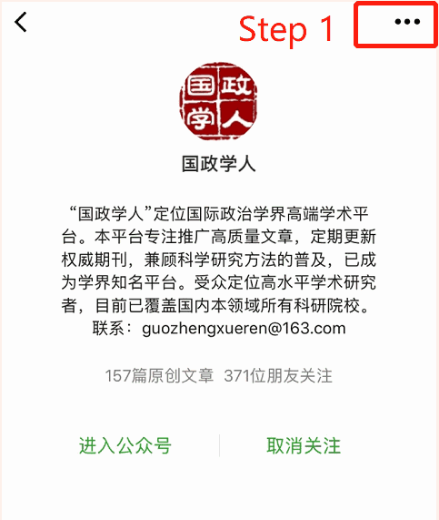

收录于合集

简 介
**
**
【作者简介】 Anoushiravan Ehteshami，杜伦大学（Durham University）政府与国际事务学院教授，中东与伊斯兰研究部主任，长期从事中东问题研究。
【 文章来源 】Global Policy, Volume 9. Issue 3, September 2018
【 期刊介绍 】 Global Policy ，《全球政策》是杜伦大学(Durham University)的一份基于同行评议的核心学术期刊，与威利-布莱克威尔(Wiley- Blackwell)联合出版，重点关注政治学，国际关系，与公共政策方面。
【 编译 】 徐枫潇
【 校对 】 李桐
摘要
2013年，中国开始着手以一种新方式同其亚洲邻国打交道，这一过程仅在三年后就形成了亚洲最大胆，最雄心勃勃的宏观经济政策——一带一路倡议。一带一路倡议的成功将置北京于国际体系的中心，并且有助于中国建立一个强大的有机网络，穿过亚洲，进入欧洲和非洲东部。作为该倡议边缘地带的中东和东亚地区，将成为检验一带一路承压力、甚或是中国作为一个大国的抗冲击力的试金石。如果中国有能力去克服这些亚洲地区的地缘政治上的，文化上的，制度上的以及社会经济上的阻碍，那么在创建亚洲的首个国际社会，可能是一个“亚洲国际社会”上，它都将取得一些进展。
政策影响（意义）：
1、中国的一带一路倡议将为亚洲的地区主义创造新条件。
2、一带一路很可能会通过影响中东地区的权力均势来加剧中东与中亚地区的不平衡发展。
3、中国如果能够实现其雄心壮志，那么创造首个“亚洲国际社会”将取得进展，这将是独立于西方世界之外的独特存在。
4、一带一路倡议在穿过亚洲各地、尤其是南亚地区时，将产生反作用力，因为中东诸国和中国都在该地有着复杂的经济和安全关系。
主要问题：
1、一带一路倡议将如何影响中东与中亚地区的区域化体系？
2、中国领导人提出的“共同愿景”是什么？一带一路倡议能否在获得认同的基础上建立一个国际社会？
3、一带一路倡议未来几年的发展将如何塑造关于“区域国际社会”的概念——正在崛起的被称作是“亚洲国际社会”的概念？
文章重点：
关于中国与中东地区联系日趋密切，最为直接的解释是：21世纪国际政治与经济领域最为显著的发展就是中国的快速崛起，中国必须寻找一个稳定可靠的源头来获取能源从而助力经济增长，而波斯湾地区诸国雄厚的能源禀赋，让出于现实考量的北京更加趋向于加强与该地区的紧密关联。
但是基于现实考量，一带一路倡议的全面实现存在重大屏障。首先，一带一路倡议极有可能加剧中国以西——亚洲西部地区的不平衡发展。不平衡性也会在沿线地区产生障碍，一带一路的资金分配在不同的国家间产生分异，在上游和下游国家之间出现断层；其次，中国与阿拉伯世界70%的贸易合作是同海湾合作委员会（GCC）国家进行的，因此这些国家乐见与中国建立自由贸易协定，但是这样一种协定将势必会进一步加深阿拉伯世界的分裂与极化状态，因此，中国在中东问题上可能需要额外的花费以维持战略落实的平衡性，尤其是要考虑对脆弱地区和经济欠发达地区进行适当的经济倾斜；再者，随着一带一路倡议在亚洲地区的发展与深化，将原有的区域竞争关系加深，同时导致地缘政治紧张加剧，例如伊朗- 沙特，或者中国-印度-伊朗- 巴基斯坦；除此之外，暴力冲突似乎已经成为了中东及北非地区一个固定的洲际和区域间特征，因此这很有可能会对一带一路倡议的实施构成威胁。
*点击左下角“ 阅读原文 ”获取原文pdf版
更多阅读

国政学人 （ID：guozhengxueren)
为方便学人及时阅读高质量文章
别忘把国政学人设置 星标 哦~
